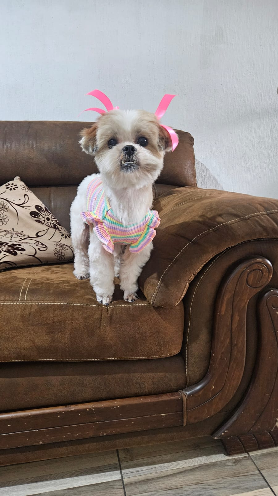

Un pequeño encuentro.
Un amor para siempre.
Hay historias esperando comenzar contigo. Conoce a nuestros peluditos, descubre sus personalidades y encuentra a tu nuevo mejor amigo.

Tu nuevo compañero
te está esperando 🐾
Cada animal tiene una personalidad única y mucho cariño para dar.
No encontramos animales disponibles con ese filtro.
¿Qué mascota va contigo?
Responde unas preguntas y te mostraremos animales que podrían adaptarse a tu hogar y rutina. La compatibilidad es orientativa.
Segundas oportunidades,
nuevas historias.
Creemos que todos los animales merecen un hogar seguro y lleno de amor. Trabajamos para organizar los rescates, cuidar su salud y acompañar cada proceso de adopción.
Adoptar es un compromiso para toda la vida. Nuestro equipo revisará cada solicitud para encontrar la mejor familia para cada animal.
Quiero adoptar →El próximo capítulo comienza aquí.
Explora los animales disponibles y envía una solicitud desde su tarjeta.
Ver animales disponibles →